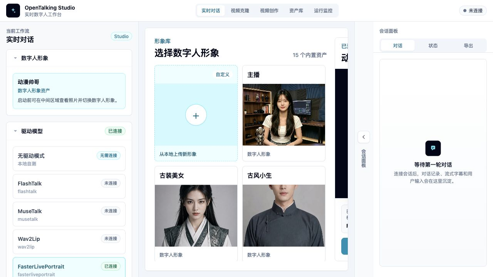

快速开始¶
本页帮助你快速跑通 OpenTalking，先用 Mock 模式 验证编排层、LLM、TTS、 字幕事件和 WebRTC 播放，再使用实际模型 QuickTalk，验证真实数字人视频渲染。
- Mock 模式：不下载模型权重，不需要 GPU，用内置静态帧验证完整交互链路。
- QuickTalk 模式：使用本地 CUDA GPU 和 QuickTalk 权重，验证真实数字人渲染链路。
- WebUI 验证：在页面中选择 Avatar、模型、音色，发起一次实时对话。
Mock 模式¶
Mock 模式是第一次使用 OpenTalking 的推荐路径。它不需要 GPU、模型权重或外部推理服务， 但仍然会跑通 API、LLM、TTS、字幕事件、WebRTC 和浏览器播放链路。
适合：
- 第一次安装和验证环境。
- 检查 LLM / TTS 配置是否可用。
- 在没有 GPU 的机器上预览 WebUI 和会话流程。
Mock 模式环境¶
| 依赖 | 建议版本 | 说明 |
|---|---|---|
| Python | >= 3.10，推荐 3.11 |
后端服务和运行时。 |
| Node.js | >= 18 |
WebUI 前端。 |
| FFmpeg | 系统可执行命令 | 音视频处理依赖。 |
| GPU | 不需要 | 使用内置 Mock 静态帧。 |
1. 克隆项目¶
export DIGITAL_HUMAN_HOME=/opt/digital_human
mkdir -p "$DIGITAL_HUMAN_HOME"
cd "$DIGITAL_HUMAN_HOME"
git clone https://github.com/datascale-ai/opentalking.git
cd opentalking
2. 安装基础依赖¶
推荐使用 uv 安装依赖：
# 可选：使用国内 PyPI 镜像
export UV_DEFAULT_INDEX=https://pypi.tuna.tsinghua.edu.cn/simple
uv sync --extra dev --python 3.11
source .venv/bin/activate
cp .env.example .env
如果环境暂时不方便使用 uv，可以使用兼容安装方式：
python3 -m venv .venv
source .venv/bin/activate
pip install --index-url https://pypi.tuna.tsinghua.edu.cn/simple -e ".[dev]"
cp .env.example .env
3. 配置最小环境变量¶
编辑 .env，至少配置 LLM 和 TTS。下面是一个使用 OpenAI-compatible endpoint 和 edge
TTS 的最小示例：
OPENTALKING_LLM_BASE_URL=https://dashscope.aliyuncs.com/compatible-mode/v1
OPENTALKING_LLM_API_KEY=sk-your-key
OPENTALKING_LLM_MODEL=qwen-flash
OPENTALKING_TTS_DEFAULT_PROVIDER=edge
OPENTALKING_TTS_EDGE_VOICE=zh-CN-XiaoxiaoNeural
edge TTS 不需要 API key。如果使用 DashScope STT 或 DashScope TTS，按模块配置
OPENTALKING_STT_DASHSCOPE_API_KEY 或 OPENTALKING_TTS_DASHSCOPE_API_KEY。
4. 启动 mock 模式¶
默认端口：
- API / unified backend：
8000 - WebUI：
5173
如需指定端口：
5. 打开 WebUI¶
启动成功后，终端会输出 WebUI 地址。默认访问：

6. 完成第一次对话¶
在 WebUI 中选择 Mock / driverless 模式，确认 LLM 和 TTS 配置后，输入一句测试文本并开始会话。 如果浏览器能播放音频、显示字幕，并看到 Mock 画面，说明基础链路已经跑通。

QuickTalk 模式¶
QuickTalk 模式是更接近真实数字人效果的快速路径。它可以在本地加载 QuickTalk 权重，适合消费级 CUDA GPU 单机验证。
适合：
- 有可用的 NVIDIA GPU 和 CUDA 环境。
- 希望看到真实口型和头像驱动效果。
QuickTalk 模式环境¶
| 依赖 | 建议版本 | 说明 |
|---|---|---|
| Python | >= 3.10，推荐 3.11 |
后端服务和模型依赖。 |
| Node.js | >= 18 |
WebUI 前端。 |
| FFmpeg | 系统可执行命令 | 音视频处理依赖。 |
| GPU | NVIDIA CUDA GPU | 推荐从 3090 / 4090 级别机器开始验证。 |
| 权重 | QuickTalk、HuBERT、InsightFace buffalo_l |
需按本页步骤下载或离线同步。 |
1. 确认 GPU 与系统环境¶
QuickTalk 模式需要本地 CUDA GPU。建议先确认：
2. 安装模型依赖¶
cd "$DIGITAL_HUMAN_HOME/opentalking"
uv sync --extra dev --extra models --python 3.11
source .venv/bin/activate
3. 准备 QuickTalk 权重¶
QuickTalk 本地权重和依赖建议统一放在仓库根目录的 models/quicktalk/。
cd "$DIGITAL_HUMAN_HOME/opentalking"
mkdir -p models/quicktalk/checkpoints
uv pip install -U "huggingface_hub[cli]"
# 可选：网络慢时使用 Hugging Face 镜像
export HF_ENDPOINT=https://hf-mirror.com
hf download datascale-ai/quicktalk \
quicktalk.pth \
repair.npy \
chinese-hubert-large/config.json \
chinese-hubert-large/preprocessor_config.json \
chinese-hubert-large/pytorch_model.bin \
--local-dir models/quicktalk/checkpoints
QuickTalk 权重和 HuBERT 文件已经包含在 datascale-ai/quicktalk 中。QuickTalk 还需要单独准备 InsightFace buffalo_l：
# 下载并解压 InsightFace buffalo_l 到 QuickTalk auxiliary 目录。
mkdir -p /tmp/opentalking-insightface models/quicktalk/checkpoints/auxiliary/models
curl -L \
-o /tmp/opentalking-insightface/buffalo_l.zip \
https://github.com/deepinsight/insightface/releases/download/v0.7/buffalo_l.zip
unzip -q -o /tmp/opentalking-insightface/buffalo_l.zip \
-d /tmp/opentalking-insightface
rsync -a /tmp/opentalking-insightface/buffalo_l/ \
models/quicktalk/checkpoints/auxiliary/models/buffalo_l/
建议校验关键文件 SHA256：
quicktalk.pth: fc8a7ea025c99a471ef00738874be5ecb6b5dfaf88ff6a1255a5d45a05d73001
repair.npy: 9ea50edde851bf3b12aa22d67b6f0db4f2930f3d9b7b3febcbd383e14117bfca
chinese-hubert-large/config.json: 8511d73054ac289ef47a527efdfd6738d2cb60f69f2973fdc9277492d9ff854b
chinese-hubert-large/preprocessor_config.json: 6334d6e0c5f2084c9a99b85ddff243cbc79dbaa4aa790bcddf8c41c496fab6fb
chinese-hubert-large/pytorch_model.bin: 9cf43abec3f0410ad6854afa4d376c69ccb364b48ddddfd25c4c5aa16398eab0
检查关键文件：
stat models/quicktalk/checkpoints/quicktalk.pth
stat models/quicktalk/checkpoints/repair.npy
stat models/quicktalk/checkpoints/chinese-hubert-large/pytorch_model.bin
stat models/quicktalk/checkpoints/auxiliary/models/buffalo_l/det_10g.onnx
目录结构应类似：
models/
quicktalk/
checkpoints/
quicktalk.pth
repair.npy
chinese-hubert-large/
config.json
preprocessor_config.json
pytorch_model.bin
auxiliary/models/buffalo_l/
det_10g.onnx
...
4. 准备自定义 Avatar¶
可以先使用项目内置的 QuickTalk 示例 Avatar。后续如果要上传自己的形象，建议使用清晰正脸或半身图， 并在 WebUI 中通过“从本地上传新形象”创建自定义 Avatar。
5. 启动 QuickTalk 模式¶
export OPENTALKING_TORCH_DEVICE=cuda:0
export OPENTALKING_QUICKTALK_ASSET_ROOT="$DIGITAL_HUMAN_HOME/opentalking/models/quicktalk"
export OPENTALKING_QUICKTALK_WORKER_CACHE=1
cd "$DIGITAL_HUMAN_HOME/opentalking"
bash scripts/start_unified.sh --backend local --model quicktalk
如果需要指定端口：
bash scripts/start_unified.sh \
--backend local \
--model quicktalk \
--api-port 8210 \
--web-port 5280
首次启动可能会构建 face cache 和 worker，耗时会比 Mock 模式更长。
6. 在 WebUI 中选择 QuickTalk¶
打开 WebUI 后，选择 QuickTalk 相关 Avatar 和 quicktalk 模型，再发起一次会话。
如果视频画面随音频生成，说明本地 QuickTalk 渲染链路已经可用。
验证¶
检查浏览器播放¶
在 WebUI 中确认：
- 页面能够连接到 API。
- 可以创建会话。
- 有字幕或状态事件更新。
- 浏览器可以播放音频和视频。
检查 QuickTalk 输出¶
QuickTalk 模式下，如果第一次会话较慢，先等待缓存和 worker 初始化完成。确认 GPU 正在工作：
如果 WebUI 能看到动态视频结果，说明 QuickTalk 本地链路已经跑通。
常见问题¶
端口被占用¶
换一组端口启动：
停止启动的服务：
LLM 鉴权失败¶
检查 .env 中的 OPENTALKING_LLM_BASE_URL、OPENTALKING_LLM_API_KEY 和
OPENTALKING_LLM_MODEL。如果使用 DashScope compatible mode，确认 URL 包含
/compatible-mode/v1。
浏览器没有声音¶
确认浏览器没有静音，页面获得了播放权限，并检查 TTS provider 是否可用。使用 edge TTS 时一般不需要
API key；使用 DashScope TTS 时需要配置 OPENTALKING_TTS_DASHSCOPE_API_KEY。
WebRTC 没有画面¶
先用 Mock 模式确认浏览器和 WebRTC 链路可用。如果本机访问正常、远端访问异常，通常需要检查网络、 防火墙、HTTPS 和 TURN 配置。
Mock 正常但 QuickTalk 不可用¶
常见原因是模型依赖未安装、权重目录不完整、CUDA 不可用或 OPENTALKING_QUICKTALK_ASSET_ROOT
指向错误。先运行 stat 命令检查关键文件，再用 nvidia-smi 确认 GPU 状态。
GPU / 权重路径错误¶
确认 OPENTALKING_TORCH_DEVICE、OPENTALKING_QUICKTALK_ASSET_ROOT 和 models/quicktalk
目录结构一致。如果使用离线权重，只要最终文件路径与本页示例一致即可。
下一步¶
不同平台环境¶
查看 平台说明，了解 Linux、macOS、Windows、国内镜像源和常见系统依赖。
Docker 部署¶
查看 Docker 部署，了解容器化运行方式。
WebUI 使用¶
查看 WebUI 使用，继续了解页面布局、Avatar、音色和会话操作。
模型支持¶
查看 模型支持，选择 Wav2Lip、QuickTalk、FasterLivePortrait、MuseTalk、FlashTalk、 OmniRT 或后续推理后端。需要摄像头或上传视频驱动数字人时，继续阅读视频克隆。
命令行工具¶
查看 命令行工具，了解 opentalking-unified、启动脚本和常用参数。